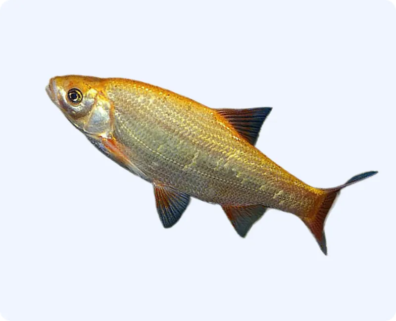

Рыба для пруда
Золотой язь (орфа)
Цена и наличие
- 6-15 см24 BYN / шт.В наличии
- 15-25 см60 BYN / шт.В наличии
Данные на 23.11.2026.
Характеристики
- Внешний вид
- Имеет стройное и боковое сплюснутое тело, покрытое мелкой чешуей.
- Сезонность
- Март-октябрь
- Возраст
- Сеголетки, годовики
- Максимальный вес
- До 4 кг
- Продолжительность жизни
- До 29 лет. При хорошем содержании золотой язь относится к долгоживущим прудовым рыбам, однако фактическая продолжительность жизни зависит от качества воды, кислородного режима, кормления и условий зимовки
- Половая зрелость
- Обычно наступает примерно в 3–5 лет, при этом самцы, как правило, созревают раньше самок. В более холодных условиях половое созревание может наступать позднее
- Питается
- Золотой язь — всеядная рыба с выраженной склонностью к животной пище. Он питается личинками и взрослыми водными и наземными насекомыми, мелкими ракообразными, моллюсками, червями и другими беспозвоночными. Крупные особи могут поедать икру, мальков и небольшую рыбу. В рацион также входит некоторое количество растительного материала
- Температура воды для активного питания и размножения
- Активное питание и хороший рост наблюдаются преимущественно при температуре около 14–20 °C. Золотой язь относится к прохладноводным рыбам и хуже переносит продолжительную жару, чем карп или кои. Естественный нерест происходит ранней весной преимущественно при температуре около 6–14 °C, чаще всего при 8–12 °C
- Условия пруда для содержания
- Лучше всего подходит просторный пресноводный пруд с чистой, хорошо насыщенной кислородом водой, свободным пространством для активного плавания и стабильной фильтрацией. Золотой язь чувствителен к длительному недостатку кислорода и сильному загрязнению воды, поэтому хорошая аэрация особенно важна летом. Постоянное сильное течение не требуется, но умеренная циркуляция воды полезна
- Рост
- Сеголетки 50-100 г, двухлетки 200-500 г
Описание
Золотой язь, также известный как орфа, представляет собой интересную и красочную рыбу, которая встречается в реках и озерах Европы. Красочный окрас и изящные формы делают его желанным обитателем водных пространств.
УСЛОВИЯ ОБИТАНИЯ
Золотой язь, или орфа, — декоративная цветовая форма обыкновенного язя (Leuciscus idus). От природной формы он отличается прежде всего яркой золотисто-желтой, оранжевой или красновато-золотой окраской, при этом основные биологические особенности и требования к содержанию остаются такими же. Орфа — очень активная рыба, большую часть времени проводящая в толще воды и у поверхности. Для содержания ей необходим просторный пруд с открытыми участками для свободного плавания. В тесных или сильно заросших водоемах содержать взрослых золотых язей нежелательно, поскольку рыбе требуется значительно больше пространства, чем большинству небольших декоративных золотых рыбок. Особенно важен высокий уровень растворенного кислорода. Орфа хуже переносит кислородный дефицит, чем карп, карась или линь, поэтому в летнюю жару и при высокой плотности рыбы рекомендуется постоянная аэрация. Хорошая механическая и биологическая фильтрация помогает поддерживать стабильное качество воды и снижает количество органических загрязнений. Золотые язи активны и способны выпрыгивать из воды, особенно при испуге, резкой смене погоды или неблагоприятных условиях. Поэтому уровень воды желательно располагать ниже края пруда, а места, где рыба может легко выпрыгнуть наружу, необходимо учитывать при проектировании водоема. Орфа миролюбива по отношению к рыбе сопоставимого размера и хорошо подходит для совместного содержания с кои и другими мирными прудовыми видами при совпадении требований к качеству воды. При этом крупный золотой язь способен поедать икру и очень мелких мальков, поэтому его нельзя считать полностью безопасным для недавно появившегося потомства других рыб.
РАЗМНОЖЕНИЕ
Золотой язь способен самостоятельно размножаться в подходящем пруду. Нерест имеет выраженный сезонный характер и происходит ранней весной после зимовки, когда температура воды начинает постепенно повышаться. В условиях Центральной и Восточной Европы половозрелые рыбы обычно приступают к нересту при температуре около 6–14 °C. В природе язь размножается на мелководных участках рек, озер и затопленных территорий, используя растительность, гравий, камни, корни и другие подводные поверхности. Самка нерестится один раз за сезон и может сопровождаться несколькими самцами. Икра клейкая и после наружного оплодотворения прикрепляется к водным растениям, корням, камням, гравию и другим подходящим субстратам. Золотой язь не строит гнезд и не проявляет родительской заботы. После завершения нереста взрослые рыбы не охраняют икру и появившуюся молодь. Продолжительность развития икры зависит от температуры воды и в естественных весенних условиях может составлять примерно от одной до двух недель, а в более холодной воде развитие занимает дольше. После вылупления молодь первоначально питается мелким зоопланктоном и другими доступными организмами.
КОРМЛЕНИЕ
Золотой язь — всеядная рыба, однако значительную часть его естественного рациона составляет животная пища. Молодые рыбы активно поедают зоопланктон, личинок насекомых, мелких ракообразных и других беспозвоночных. Орфа также охотно собирает насекомых, падающих на поверхность воды. По мере роста рацион становится разнообразнее. Взрослые особи питаются личинками и взрослыми насекомыми, моллюсками, червями, ракообразными и другими животными организмами, а крупные язи способны поедать небольшую рыбу, икру и мальков. Растительный материал также присутствует в рационе, но золотого язя не следует относить к растительноядным рыбам. При содержании в декоративном пруду орфу можно кормить качественными полнорационными кормами для всеядных прудовых рыб. Благодаря расположению рта и активному поведению золотой язь хорошо берет плавающий корм с поверхности и из верхних слоев воды. Наиболее активно рыба питается при умеренно теплой воде. При продолжительной жаре особенно важно следить за аэрацией, поскольку с повышением температуры количество растворенного кислорода уменьшается. Перекармливание нежелательно: остатки корма ухудшают качество воды и дополнительно увеличивают потребление кислорода в водоеме.
ЗИМОВКА
Золотой язь хорошо приспособлен к холодной воде и способен зимовать в открытом пруду в климатических условиях Беларуси, если водоем имеет достаточную глубину и сохраняет нормальный кислородный режим. Это холодостойкая рыба, природный ареал которой охватывает значительную часть Северной и Восточной Европы. Осенью по мере снижения температуры активность рыбы постепенно уменьшается. Золотые язи перемещаются в более глубокие и спокойные участки водоема, где могут собираться группами и проводить холодный период при значительно сниженной кормовой активности. Полноценной спячки у орфы нет. Рыба остается способной двигаться и периодически питаться, однако при низкой температуре обмен веществ существенно замедляется, поэтому интенсивное зимнее кормление не требуется. Основное внимание зимой необходимо уделять содержанию растворенного кислорода. Для золотого язя кислородный дефицит особенно опасен, поэтому пруд не должен промерзать полностью, а под ледяным покровом необходимо сохранять газообмен. В небольших, плотно зарыбленных или богатых органикой водоемах рекомендуется использовать зимнюю аэрацию. Перед зимой желательно удалить избыток отмирающих растений, листьев и другой органики. При ее разложении расходуется кислород, что увеличивает риск зимнего замора. Весной после повышения температуры золотые язи снова становятся активными и переходят к нерестовому периоду.